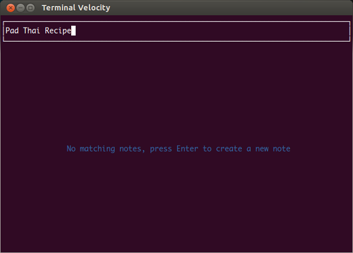
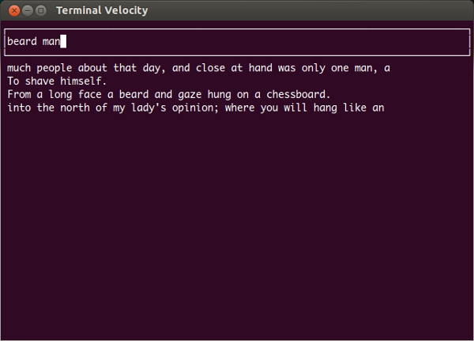
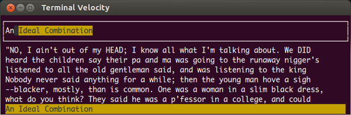

Terminal Velocity is a fast, cross-platform note-taking application for the
UNIX terminal. It focuses on letting you create or find a note as quickly and
easily as possible, then uses your $EDITOR to open and
edit the note. Disclaimer: Terminal Velocity is heavily inspired
by the OS X app
Notational Velocity.
Install
To install Terminal Velocity, run:
pip install terminal_velocity
Then to launch it just run:
terminal_velocity
To use a different notes directory, run:
terminal_velocity path/to/your/notes/dir
To see all the command-line options, run:
terminal_velocity -hTo quit the app, press ctrl-c or ctrl-x.
To upgrade Terminal Velocity to the latest version, run:
pip install --upgrade terminal_velocityTo uninstall it, run:
pip uninstall terminal_velocityCreate Notes
To create a new note, type a title for the note and hit enter. The note will
be opened in your text editor. As you type the title, the list of notes filters
to show notes that match what you've typed, giving you a chance to open a
related note instead of making a new one.
Find Notes
The same text area is used for entering the titles of new notes and for
searching notes. To find and open a note, type some words from the note's title
or contents. The list of notes filters as you type to show only matching notes.
When you see the note that you want, use the up and down arrows to select
it then hit enter to open it. You can also use page up and page down or
mouse clicks to select notes.
Autocomplete
If you type the beginning of a note's title (case-insensitive), that note will
be automatically selected in the note list and its title will be autocompleted
in the search box. Whenever a note is selected, just hit enter to open that
note.
If you want to create a new note whose title is a substring of an existing
note's title, then even after you've typed the full title for your new note the
existing note will still be selected by the autocomplete. In this case, you
have to hit ctrl-d or escape to clear the autocomplete selection, then hit
enter to create your note.
Configuration
The location of the notes directory, the text editor, the filename extension for new notes, etc. can be configured using command-line options or a config file. For details, run:
terminal_velocity -h
Syncing
Since your notes are just a directory of plain text files, it's easy to sync them using Dropbox, Ubuntu One, Unison, git, etc. Just use a notes directory in your Dropbox or Ubuntu One directory, in a git repository, etc.
Details
Notes are kept as plain text files in a notes directory (~/Notes by default).
Notes are sorted by modification date, most recently modified at the top.
The search is fuzzy. A note will match a search term if it contains all of the given search words anywhere in its title or body, the words don't have to appear consecutively or in the same order.
The search is smart-case. For each search word, if the word is all lower-case then it will be matched case-insensitively. If the word contains any upper-case letters then it will be matched case-sensitively.
Subdirectories in your notes directory are searched recursively. To create a
new note in a subdirectory, just give the subdir(s) as part of the note's
title, e.g.: programming/python/How to use decorators in Python
You can have note files with different filename extensions.
The --extensions option tells Terminal Velocity which filename
extensions to recognise as note files, the --extension option
sets the extension to use when creating new notes.
Terminal Velocity doesn't support renaming or moving notes yet, but you can move note files (and edit their contents) using other tools, this will not interfere with Terminal Velocity as long as you don't do it while Terminal Velocity is running.
Credits
Created by seanh.
User interaction copied from Notational Velocity.
Some code snippets ideas borrowed from Andrew Wagner and Simon Greenhill.